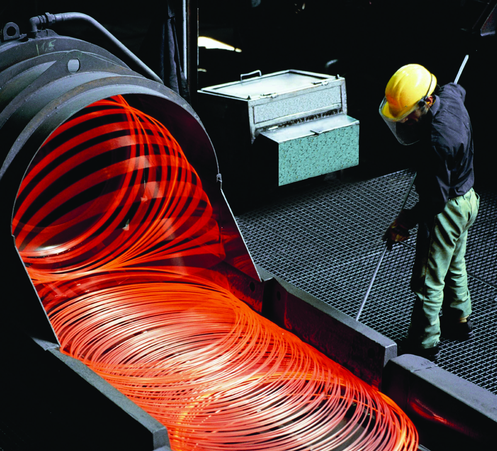

O aço do futuro é a Tecnologia ecológicacaminham juntos
A união entre a produção moderna de materiais e a sstentabilidade transforma a nossa infraestrutura. Conheça as tecnologias aplicadas para descarbonizar o planeta.

Nossos Pilares Tecnologicos
Como a pesquisa inovadora atua na prática para gerar uma cadeia industrial neutra em carbono
Aço inteligente & Reciclagem
Economia circular aplicada à siderurgia moderna. O aço da ArcelorMittal é infinitamente Reutilizado, diminuindo a necessidade de novas extrações e reduzindo as emissões globais de CO2.
Niobio & Ultra eficiencia
A tecnologia inovadora do niobio da CBMM cria ligas metálicas muito mais leves, resistentes e duráveis. Isso permite construir veiculos mais leves e eficientes, gastando menos energia.
Descarbonização total
A meta é o carbono zero. com fontes de energia 100% renovaveis, uso do hidrogenio verde na produção e forte trabalho de reflorestamento das matas nativas proximas às operações industriais.
Calculadora de Impacto Verde
Escolha uma das frentes abaixo para simular o resultado imediato das ações sustentaveis aplicadas à industria local:
A reciclagem evita o processo primário de refino de minério de ferro. Cada tonelada poupa toneladas de gases na estufa no ar.